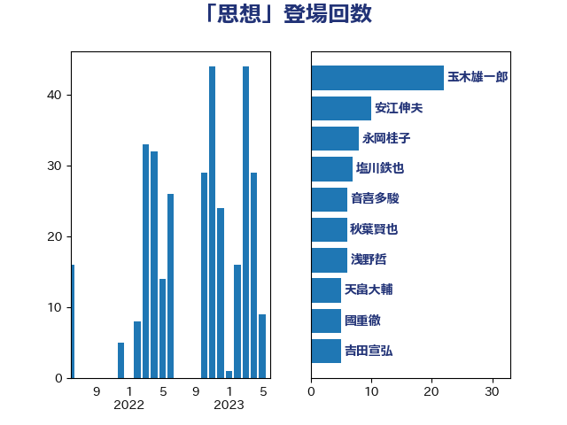

単語「思想」

| 玉木雄一郎 | 国民民主党 | 24 回 |
| 安江伸夫 | 公明党 | 10 回 |
| 松沢成文 | 日本維新の会 | 9 回 |
| 柚木道義 | 立憲民主党 | 6 回 |
| 石橋通宏 | 立憲民主党 | 6 回 |
| 浅野哲 | 国民民主党 | 5 回 |
| 猪口邦子 | 自由民主党 | 5 回 |
| 藤田文武 | 日本維新の会 | 5 回 |
| 井野俊郎 | 自由民主党 | 4 回 |
| 古川禎久 | 自由民主党 | 4 回 |
| 山添拓 | 日本共産党 | 4 回 |
| 田村貴昭 | 日本共産党 | 4 回 |
| 船田元 | 自由民主党 | 4 回 |
| 赤嶺政賢 | 日本共産党 | 4 回 |
| 伊波洋一 | 無所属 | 3 回 |
| 北村経夫 | 自由民主党 | 3 回 |
| 吉田宣弘 | 公明党 | 3 回 |
| 嘉田由紀子 | 無所属 | 3 回 |
| 塩川鉄也 | 日本共産党 | 3 回 |
| 大石あきこ | れいわ新選組 | 3 回 |
| 平井卓也 | 自由民主党 | 3 回 |
| 本庄知史 | 立憲民主党 | 3 回 |
| 田村智子 | 日本共産党 | 3 回 |
| 秋野公造 | 公明党 | 3 回 |
| 上田清司 | 国民民主党 | 2 回 |
| 中島克仁 | 立憲民主党 | 2 回 |
| 加藤勝信 | 自由民主党 | 2 回 |
| 吉川元 | 立憲民主党 | 2 回 |
| 國重徹 | 公明党 | 2 回 |
| 宮崎政久 | 自由民主党 | 2 回 |
| 小沼巧 | 立憲民主党 | 2 回 |
| 小西洋之 | 立憲民主党 | 2 回 |
| 山下芳生 | 日本共産党 | 2 回 |
| 山本太郎 | れいわ新選組 | 2 回 |
| 志位和夫 | 日本共産党 | 2 回 |
| 新藤義孝 | 自由民主党 | 2 回 |
| 有村治子 | 自由民主党 | 2 回 |
| 杉尾秀哉 | 立憲民主党 | 2 回 |
| 浅田均 | 日本維新の会 | 2 回 |
| 渡辺周 | 立憲民主党 | 2 回 |
| 芳賀道也 | 国民民主党 | 2 回 |
| 茂木敏充 | 自由民主党 | 2 回 |
| 菅義偉 | 自由民主党 | 2 回 |
| 重徳和彦 | 立憲民主党 | 2 回 |
| 金子恵美 | 立憲民主党 | 2 回 |
| 音喜多駿 | 日本維新の会 | 2 回 |
| 額賀福志郎 | 自由民主党 | 2 回 |
| 中西祐介 | 自由民主党 | 1 回 |
| 伊佐進一 | 公明党 | 1 回 |
| 伊藤岳 | 日本共産党 | 1 回 |
| 北神圭朗 | 無所属 | 1 回 |
| 古川俊治 | 自由民主党 | 1 回 |
| 吉田統彦 | 立憲民主党 | 1 回 |
| 吉良よし子 | 日本共産党 | 1 回 |
| 城井崇 | 立憲民主党 | 1 回 |
| 大口善徳 | 公明党 | 1 回 |
| 大西健介 | 立憲民主党 | 1 回 |
| 奥野総一郎 | 立憲民主党 | 1 回 |
| 室井邦彦 | 日本維新の会 | 1 回 |
| 宮本徹 | 日本共産党 | 1 回 |
| 寺田学 | 立憲民主党 | 1 回 |
| 小宮山泰子 | 立憲民主党 | 1 回 |
| 小山展弘 | 立憲民主党 | 1 回 |
| 小熊慎司 | 立憲民主党 | 1 回 |
| 岩屋毅 | 自由民主党 | 1 回 |
| 平木大作 | 公明党 | 1 回 |
| 後藤祐一 | 立憲民主党 | 1 回 |
| 打越さく良 | 立憲民主党 | 1 回 |
| 斎藤嘉隆 | 立憲民主党 | 1 回 |
| 新垣邦男 | 立憲民主党 | 1 回 |
| 本村伸子 | 日本共産党 | 1 回 |
| 松原仁 | 立憲民主党 | 1 回 |
| 松本尚 | 自由民主党 | 1 回 |
| 林芳正 | 自由民主党 | 1 回 |
| 柴田巧 | 日本維新の会 | 1 回 |
| 梅村聡 | 日本維新の会 | 1 回 |
| 梶山弘志 | 自由民主党 | 1 回 |
| 森山浩行 | 立憲民主党 | 1 回 |
| 森田俊和 | 立憲民主党 | 1 回 |
| 泉田裕彦 | 自由民主党 | 1 回 |
| 浜地雅一 | 公明党 | 1 回 |
| 深澤陽一 | 自由民主党 | 1 回 |
| 渡辺創 | 立憲民主党 | 1 回 |
| 田村憲久 | 自由民主党 | 1 回 |
| 矢倉克夫 | 公明党 | 1 回 |
| 福島みずほ | 社会民主党 | 1 回 |
| 穀田恵二 | 日本共産党 | 1 回 |
| 篠原孝 | 立憲民主党 | 1 回 |
| 篠原豪 | 立憲民主党 | 1 回 |
| 舟山康江 | 国民民主党 | 1 回 |
| 萩生田光一 | 自由民主党 | 1 回 |
| 赤池誠章 | 自由民主党 | 1 回 |
| 足立康史 | 日本維新の会 | 1 回 |
| 道下大樹 | 立憲民主党 | 1 回 |
| 鈴木敦 | 国民民主党 | 1 回 |
| 階猛 | 立憲民主党 | 1 回 |
| 須藤元気 | 無所属 | 1 回 |
| 馬場伸幸 | 日本維新の会 | 1 回 |
| 高木かおり | 日本維新の会 | 1 回 |